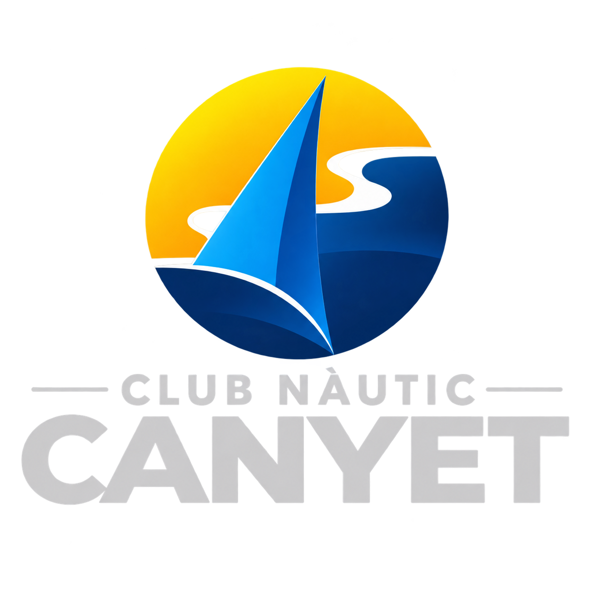
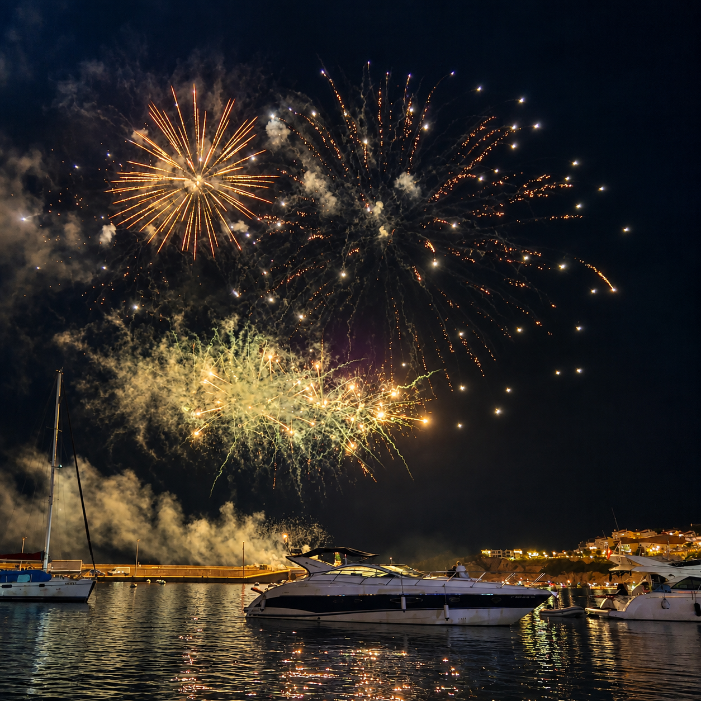

Fundació
Una història vinculada al mar, a Canyet i a les persones que han fet possible la vida nàutica d'aquest indret.

Un espai únic al cor de la Costa Brava
Història, fundació, valors i comunitat
→Socis, fondejos, embarcacions i serveis
→Sortides especials i experiències al mar
→Història de la cala, pontets i entorn
→Informació privada, avisos i documentació
→Estat de la mar, vent i previsió a Canyet
→El Club Nàutic Canyet neix amb una vocació clara: preservar una manera de viure el mar, la costa i la comunitat de Canyet · Rosamar.
Més que un espai per a la navegació, el club és un punt de trobada entre persones unides per la passió pel Mediterrani i pel privilegiat entorn de la Costa Brava.
Una història vinculada al mar, a Canyet i a les persones que han fet possible la vida nàutica d'aquest indret.
Respecte pel mar, convivència, tradició, natura i una manera responsable de gaudir de la Costa Brava.
Un club pensat per compartir experiències, navegar i mantenir viu l'esperit de Canyet.
Ser soci del Club Nàutic Canyet significa formar part d'una comunitat vinculada al mar i disposar d'un entorn privilegiat per gaudir de la navegació.
Quota bàsica del Club.
Quota anual de soci.
Per fer-se soci del CN Canyet, s'ha d'abonar una quota d'entrada única de 1.500 €. Aquest pagament és a fons perdut: es paga una sola vegada i no es recupera si el soci decideix abandonar el Club.
Pagament únic · a fons perdut.
Els menors de 32 anys no paguen l'adhesió al Club.
Exempció de la quota d'adhesió.
Tarifes del Club Nàutic Canyet · Temporada 2026.
| Concepte | Preu brut | IVA (21 %) | Preu final |
|---|---|---|---|
| Quota bàsica | 250 € | — | 250 € |
| Fins a 3,99 m | 820 € | 172,20 € | 992,20 € |
| Entre 4,0 i 5,99 m | 1.181 € | 248,01 € | 1.429,01 € |
| Entre 6,0 i 7,99 m (*) | 1.505 € | 316,05 € | 1.821,05 € |
| Semirígides entre 8,0 i 10,5 m (**) | 2.155 € | 452,55 € | 2.607,55 € |
(*) Fins a 7,5 m d'eslora màxima permesa, per a embarcacions de fibra de vidre o, en defecte d'això, 2 Tn de desplaçament. (**) Sota sol·licitud expressa.
| Període | Preu brut | IVA (21 %) | Preu final |
|---|---|---|---|
| Tarifa / dia | 100 € | 21 € | 121 € |
| 1 setmana | 663 € | 139,23 € | 802,23 € |
| 2 setmanes | 1.077 € | 226,17 € | 1.303,17 € |
| 3 setmanes | 1.408 € | 295,68 € | 1.703,85 € |
| 4 setmanes | 1.768 € | 371,28 € | 2.139,28 € |
| Període | Preu brut | IVA (21 %) | Preu final |
|---|---|---|---|
| 1 setmana | 292 € | 61,32 € | 353,32 € |
| 2 setmanes | 475 € | 99,75 € | 574,75 € |
| 3 setmanes | 640 € | 134,40 € | 774,40 € |
| 4 setmanes | 773 € | 162,33 € | 935,33 € |
De l'1 de juny al 31 d'agost
| Concepte | Preu brut | IVA (21 %) | Preu final |
|---|---|---|---|
| Fins a 4,5 m d'eslora | 1.600 € | 336 € | 1.936 € |
| De 4,5 a 7,5 m d'eslora | 2.300 € | 483 € | 2.783 € |
(*) Fins a 7,5 m d'eslora màxima permesa o, en defecte d'això, 2 Tn de desplaçament.
Sortides especials per gaudir de la Costa Brava d'una manera diferent.

Una sortida especial en embarcació per contemplar els focs artificials de Sant Feliu de Guíxols des del mar.

Una sortida especial per viure l'eclipsi des del mar davant de Canyet · Rosamar.
Canyet és molt més que una cala. És un paisatge construït lentament entre la roca, el bosc i la mar, on els camins, els Pontets, els quioscos i els miradors formen part d'una mateixa història. Les postals antigues permeten veure aquest indret abans de les transformacions de les darreres dècades i entendre fins a quin punt l'arquitectura es va adaptar al relleu natural.
La documentació gràfica conservada mostra diferents punts de vista de la mateixa geografia: la cala, l'accés litoral, les escales, els Pontets, la Punta de Canyet i les petites glorietes que dominaven el penya-segat. Són testimonis d'una època en què arribar fins al mar formava part de l'experiència de viure i gaudir d'aquest racó de la Costa Brava.
La transformació de l'entorn va començar a principis del segle XX, vinculada a la família Castelló i a la tradició surera de Sant Feliu de Guíxols. Al voltant de 1912 es projectà l'accés privat al mar que acabaria donant forma al paisatge que encara avui reconeixem a Canyet.
Les fotografies antigues permeten seguir visualment aquest procés: un litoral abrupte convertit en un recorregut accessible, amb camins, escales, murs, baranes i petits elements arquitectònics integrats sobre la roca.
Els Pontets són probablement l'element més singular i recognoscible de Canyet. Les passarel·les construïdes sobre la roca permetien arribar fins a la mar seguint el perfil del penya-segat. Les escales i els trams de pas salvaven els desnivells i feien possible recórrer un litoral que, per la seva naturalesa, hauria estat difícilment accessible.
Les postals mostren amb extraordinària claredat les baranes formades per pilars de pedra i cadenes, així com els murs i els passos que s'adapten a les vetes i formes de la roca. No és una arquitectura imposada al paisatge: és una arquitectura pensada per caminar-lo.
Sobre la Punta de Canyet, les fotografies mostren dues elegants glorietes o quioscos oberts al paisatge. Situats a diferents cotes, dominaven la roca i miraven directament cap a la Mediterrània.
La seva presència explica també una manera de gaudir de Canyet: el passeig, la contemplació de la costa i la relació directa amb el mar formaven part del valor de l'indret. Les postals permeten veure com aquests petits espais arquitectònics es convertien en veritables miradors naturals.
Amb la família Sacrest, la cala incorporà un viver artificial excavat a la roca, destinat a mantenir vives les captures de llagosta per als àpats de la propietat.
Aquest detall ajuda a entendre que Canyet no era només un paisatge contemplatiu. La mateixa roca i la proximitat de la mar formaven part de la vida quotidiana i de l'ús que es feia de l'espai.
El mar i els temporals han marcat inevitablement la història de Canyet. Els Pontets han hagut de ser reconstruïts diverses vegades, però han mantingut la seva fisonomia i, sobretot, la seva relació amb el paisatge.
Quan comparem les diferents vistes antigues, hi ha una idea que es repeteix: la roca continua sent la protagonista. Els camins, els murs, les escales i els quioscos canvien, es reconstrueixen o desapareixen, però la silueta de la Punta, la cala i l'horitzó mediterrani continuen identificant Canyet.
Una selecció de vistes històriques de Canyet, Sant Feliu de Guíxols. Les imatges permeten identificar els Pontets, els quioscos, els camins, les escales i la relació entre la cala i el paisatge litoral.


Les llegendes descriuen el que es pot identificar visualment a les postals i conserven les denominacions que hi apareixen, com «Kiosks del Canyet», «Kioscos y playas de Cañet», «Cala de Cañet» o «Vista general del Cañet». Les imatges formen part d'aquest relat visual de la memòria de Canyet.
Estat actual de la mar, vent i condicions meteorològiques a Canyet · Rosamar.
Visualització en temps real de la circulació del vent al voltant de Canyet · Rosamar.
Font cartogràfica i meteorològica: Windy. La informació es mostra com a suport orientatiu i pot variar segons l'actualització de les dades.
Un espai reservat als membres del Club Nàutic Canyet per consultar informació, avisos, documentació i comunicacions del club.
Introdueix el PIN d'accés.
Canyet no és només un lloc. És una manera de viure el mar. Si vols formar part d'ella, som aquí per escoltar-te.